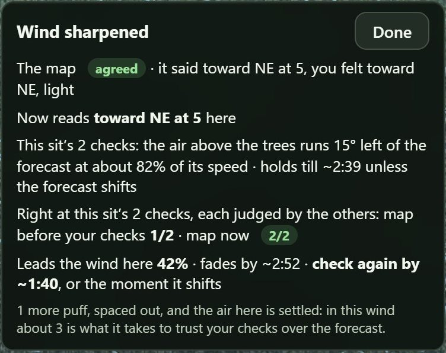

Field notes on wind checks
Tuning the Wind: How Your Powder Checks Fix the Forecast
The forecast tells you what the wind is doing 10 metres in the air, across a massive 2.5 km square. But your powder tells you what the air is doing right here, right now. Groundwind weighs one against the other to figure out exactly how the local air deviates from the forecast.
Here is how many puffs it takes to tune your map, where to take them, and how long they last.
What a Check Does
Puff your powder, tap Sharpen, and log the wind's direction and how hard it's blowing. That single check works at three different scales:
- Right here, right now: The wind map immediately updates to match what you felt, and your scent cone swings to match it.
- Across the area: Once you log two or more checks, the app calculates how the broader air above the trees deviates from the forecast. It then shifts the wind streaks and scent cones across a 2 to 3 km radius around you.
- Over the season: Every check teaches the app how the air behaves in that specific terrain—like cold air draining or a lake breeze pushing in. The map applies that lesson to similar spots, and lets it go over a couple of weeks.
The cone turns to what you felt
When to Trust the Forecast vs. Your Powder
We measured our terrain wind models against 1,100 weather stations over 330,000 hours of legal hunting light (ECCC; HRDPS; Open-Meteo). The takeaway? Forecasts do a great job in the open, but under the canopy at head height, the woods add their own spin.
- In a strong breeze: The forecast is rarely far off. One weird, swinging puff of powder shouldn't overrule it.
- In light air: The forecast's direction is only a loose guide. This is when your powder checks matter most.
Why You Need More Than One Puff
Powder is unpredictable. At our own sits, puffs taken just minutes apart swung by nearly 50°—and even more in light air. Because a single puff is rough, Groundwind lets your checks outvote the forecast only when multiple puffs agree with each other.
Where the powder went · the lake shore at Pickle, 30 Sept at dusk
Light air at dusk: average these and you get a wind that isn't there
Four puffs and the tuned wind · the air going left to right
The tuned wind goes part of the way: further in light air, and when they agree
How Many Puffs Does It Take?
It depends on how hard the forecast says the wind is blowing. The app's card will count for you and tell you when the air is "settled," but here is the general rule:
- Light air (6 km/h or less): 2 puffs
- Light breeze (10 km/h): 4 puffs
- Moderate (14 km/h): 7 puffs
- Breezy (18 km/h and up): The forecast is seldom far off; your puffs will mostly just confirm it.

One more puff settles it
Most of the time, the forecast is close. But on the bad days—when the forecast is off by 45° or more—taking enough puffs is what pulls the map back to reality.
When the forecast was over 45° off · how often the puffs put it right
Puffs as rough as real ones, ±60°
Field Rules: Where and When to Puff
The card asks for one under the trees next
Field rules
- Two places, not one: Take your second puff at least 50 m away from your first. Doing one in the open (like a bog or cutline) and one under the trees tells the app how much of the higher air is actually reaching the ground.
- Puff as you walk: Each check is tied to the exact minute it was taken. A check from your walk-in still helps map your sit hours later.
- Check when the light changes: As the sun rises or sets, the air switches between draining and rising. When this happens, your old checks no longer apply.
- Tell the app if it holds: If the wind is steady, tap same as a while ago and your check will be trusted for twice as long.
- Watch the canopy: If it's calm where you sit but the canopy is swaying, tap treetops moving, calm here. The treetops are a steadier read than powder in a gusty spot.
How Long Does a Check Last?
Wind changes, and so do your checks. Half of a check's influence fades in under two hours (or four if you tell the app the wind held). After a day, it completely resets.
How much of a check still holds · hours after it
Most of a check's say is gone in a few hours: check again
Checks are also strictly local. They tune your specific patch of bush, not the next lake over. Move 10 km away and only about a fifth of what a check learned still holds.
Every Check Teaches the Map
Every time you log a puff, Groundwind keeps score of what the forecast said versus what you actually felt. If you opt in, your anonymous checks are sent back to us. That is how we measure performance, and how Groundwind learns where it's wrong so it can get it right next time.
On 10 October, on the valley floor at Searchmont, the forecast had the wind from the south-southeast. My powder said it was coming from the northwest.
Tune the wind on your own ground.
Groundwind takes the HD forecast down to head height over the 1 m LiDAR ground and every stand of trees, and draws your scent cone on it. Every puff you log tunes it to the air that's really there. It works with no service.
Where the numbers come from
The station figures are our own measurements, made on public data. Here is where that data comes from, and the book on weighing measurements against a forecast.
- Environment and Climate Change Canada. Surface weather observations (SWOB-ML) on the MSC Datamart. Free The stations' measured wind, hour by hour.
- Environment and Climate Change Canada. High Resolution Deterministic Prediction System (HRDPS). Free The 2.5 km HD forecast.
- Kalnay, E. 2003. Atmospheric Modeling, Data Assimilation and Predictability. Cambridge University Press. How weather centres weigh measurements against a forecast.
- Open-Meteo. Historical Forecast API. Free Past HRDPS runs, so each hour is scored against what was forecast at the time.